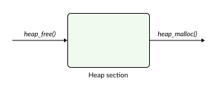
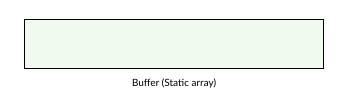
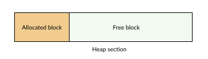
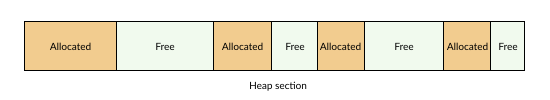
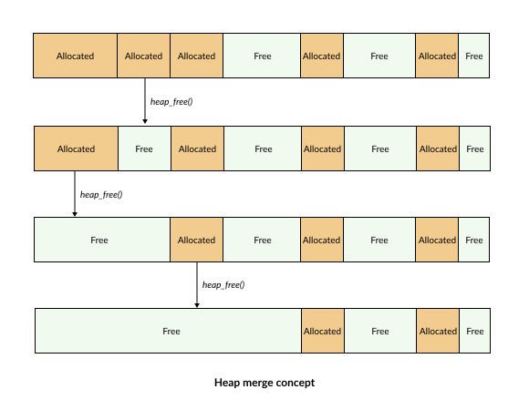

Heap
Memory management is a critical component of any RTOS framework, especially for applications that require dynamic memory allocation during runtime.
RK provides a built-in heap management mechanism with functionalities similar to malloc() and free() from the standard C library. This allows users to easily allocate and deallocate memory based on application requirements.
{kind=link}

Unlike the standard C library, the heap in RK does not utilize the default .heap section managed by the compiler. Instead, it operates on a static memory buffer declared inside the .bss section.
This entire memory region is initialized right at system startup, which helps:
Proactively determine the exact heap capacity.
Eliminate dependency on the runtime library.
Easily monitor and control overall RAM consumption.
Maintain compatibility with resource-constrained embedded systems.
Heap Block
At system startup, the entire heap memory area is treated as a single, large block in the free state.
{kind=link}

When the application requests memory allocation, RK searches for a block of sufficient size and splits it:
{kind=link}

This splitting process continues sequentially with each subsequent allocation request. Every memory block contains management metadata (a header) allowing RK to track:
The block size.
The current allocation status (used or free).
The links to adjacent memory blocks.
Heap Merge
After numerous allocation and deallocation cycles, the heap will inevitably experience memory fragmentation.
{kind=link}

Even though the total aggregate of free memory might remain large enough, the available free blocks are scattered. This leads to critical drawbacks:
Inability to allocate a single large, contiguous memory block.
Reduced memory utilization efficiency.
Increased likelihood of allocation failures.
This is a ubiquitous challenge in any dynamic memory management system. To mitigate fragmentation, RK implements an intelligent heap merge mechanism.
When a block is freed, RK checks its two immediate adjacent blocks. If either the left or the right block is also in the free state, they are coalesced (merged) into a single, larger contiguous block.
{kind=link}

Thanks to this mechanism, the system reconstructs large blocks of memory, significantly increasing the success rate of future allocation requests. If both adjacent blocks are currently in use, the newly freed block simply remains in the free state, waiting for subsequent merge opportunities.